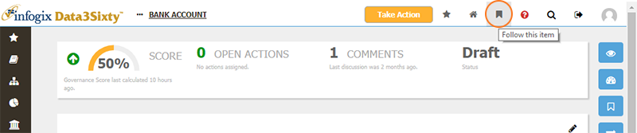
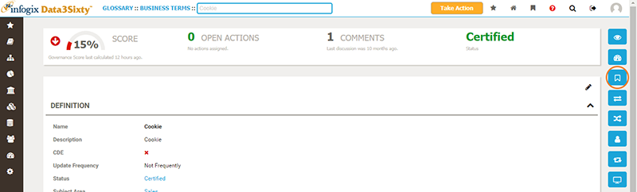

You can follow an asset if you want to be kept informed of the happening and events related to that specific item.
From the asset page, click on the Follow button in the top toolbar to follow that artifact:

You can click on the button again to stop following the item.
You can view the followers for a particular item that you have open by clicking the Followers button on the right of the screen:

When you are following an artifact, you will receive notifications related to the item.